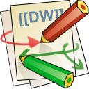

Comparison to the Classic Logo
This showcases the difference between the new DokuWiki logo and the classic one.
on white background
| 256pxfull | 128pxfull | 96pxmd | 64pxmd | 48pxmd | 40pxsm | 32pxsm | 24pxsm | 20pxxs | 16pxxs | |
|---|---|---|---|---|---|---|---|---|---|---|
| new | ||||||||||
| classic |  |
on black background
| 256pxfull | 128pxfull | 96pxmd | 64pxmd | 48pxmd | 40pxsm | 32pxsm | 24pxsm | 20pxxs | 16pxxs | |
|---|---|---|---|---|---|---|---|---|---|---|
| new | ||||||||||
| classic |